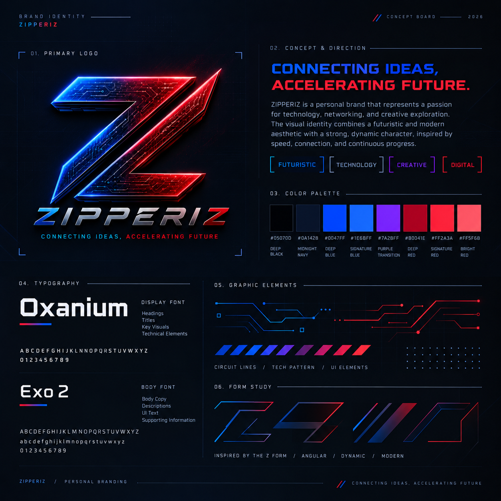
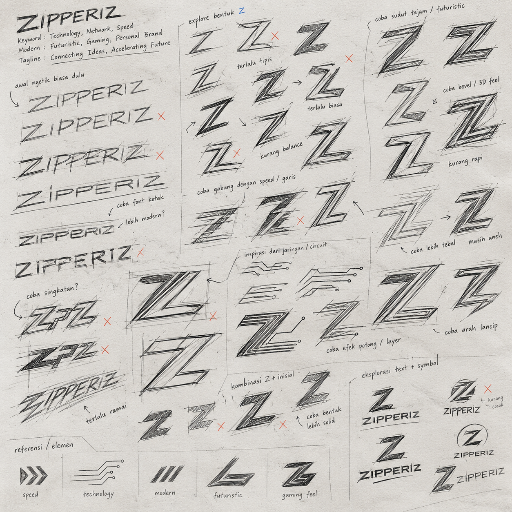
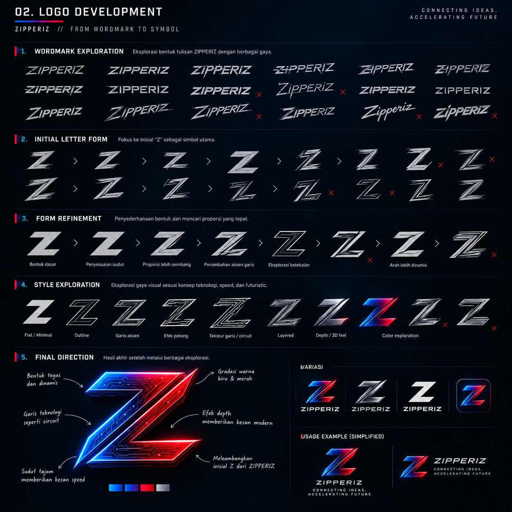
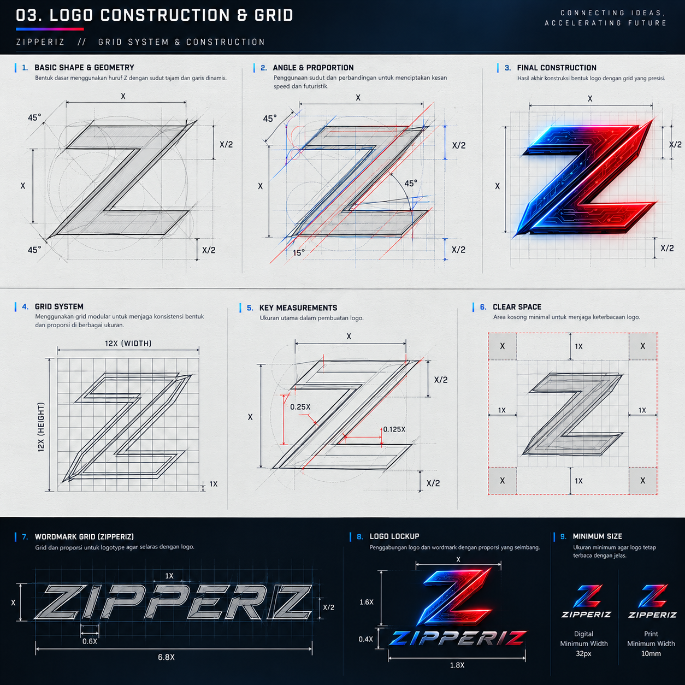
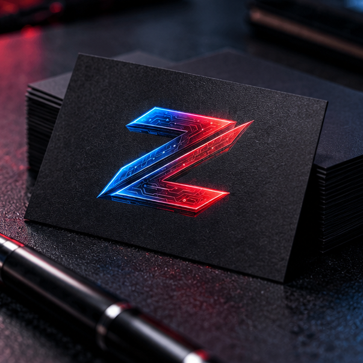
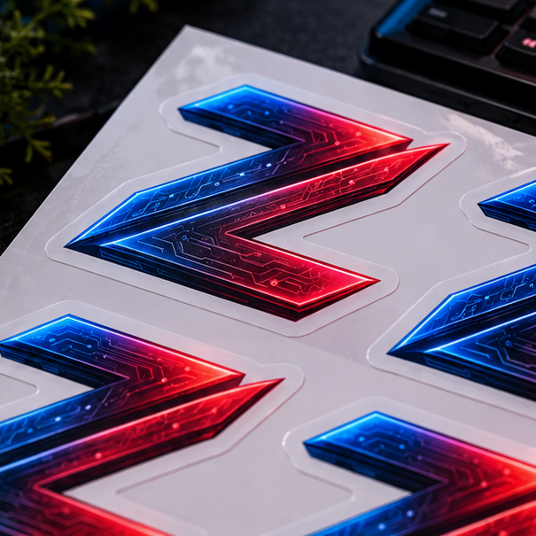
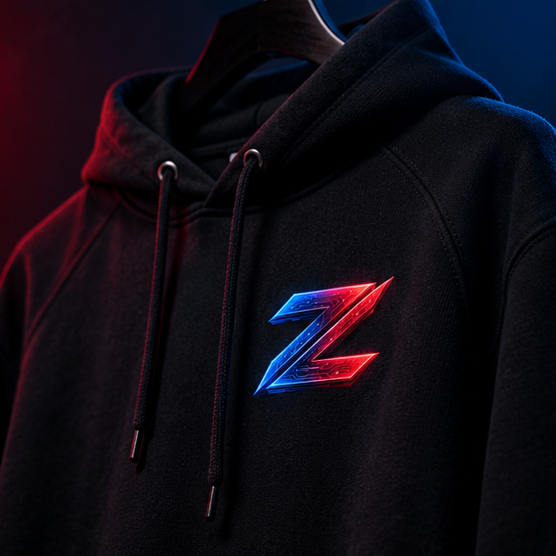
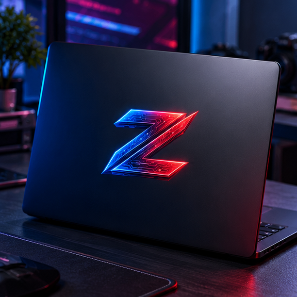
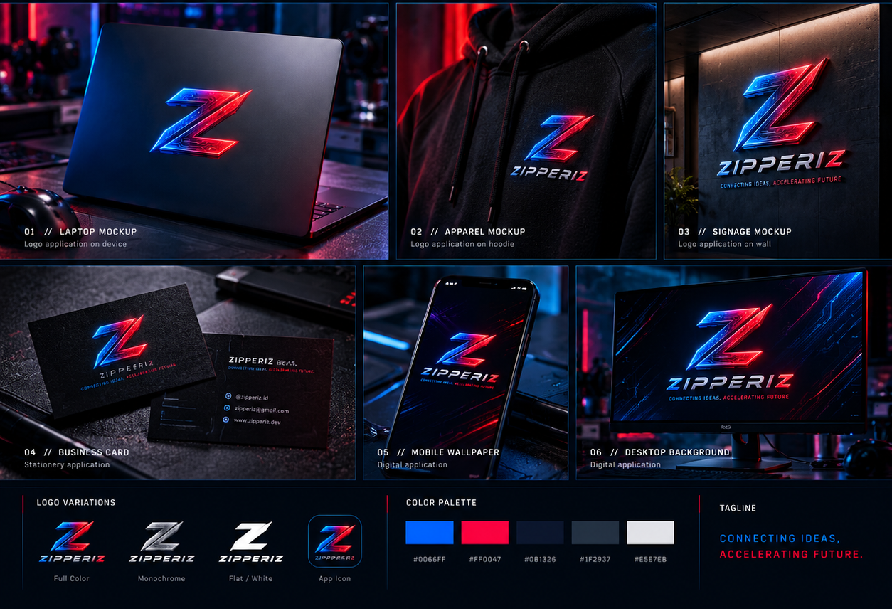

Branding Zipperiz
My personal branding project, focusing on creating a cohesive visual identity that reflects my professional persona and design philosophy.
Project Overview
this for my logo personal branding project, focusing on creating a cohesive visual identity that reflects my professional persona and design philosophy.
make me branding identity that is simple, modern, and professional. The logo is designed to be versatile and easily recognizable across various platforms and applications.
Concept & Direction

Visual Direction
The visual direction combines futuristic technology with a clean and professional visual language. The identity uses deep blue, red, and dark tones to represent technology, energy, and digital creativity while maintaining a strong and recognizable character.
Design Approach
The identity is built around the distinctive ZIPPERIZ logo, supported by geometric forms, subtle circuit-inspired elements, and strong typography. The visual system is designed to work consistently across digital platforms, creative projects, networking environments, and personal branding applications.
Logo Development

Initial Sketch
Logo Development
Construction & GridColor Palette
Show the core colors used to build the visual identity. Replace the values below with the actual project palette.
Typography
Used for major headings, titles, and key visual statements.
Used for body copy, descriptions, and supporting information.
Used for navigation, labels, metadata, and technical interface elements.
Brand Application
Show how the identity is applied across different media and touchpoints.




Final Result
Final selected visuals from the completed branding project.
